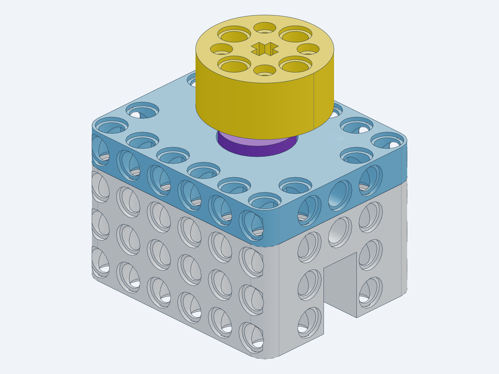
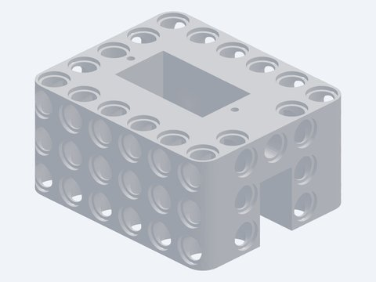
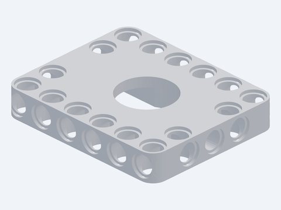
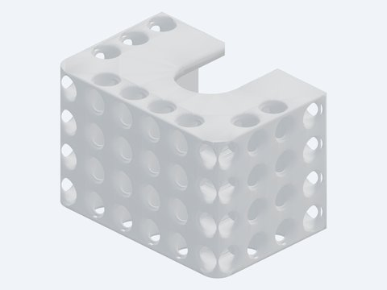
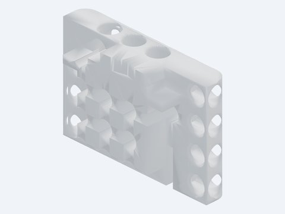
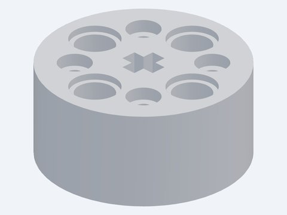

把 MG90S 微型伺服機變成 LEGO Technic 零件：外框四面都是 Technic 孔，輸出軸剛好落在 8 mm 孔格上。做了兩種裝法：上方放入（外框＋上蓋）和側面滑入（底座＋側蓋），外形都是 6 × 5 × 4 格；另有舵盤轉接盤，把伺服機的十字舵盤變成 LEGO 十字孔輸出。側面滑入版用在「MG90S 前輪轉向」和差速轉向車上。

mg90s_top_loading_preview
| 預覽 | 類型 | 說明／下載 | 大小 |
|---|---|---|---|
| FCStd | 上方放入版：外框 FreeCAD 參數化模型 mg90s_technic_frame.FCStd | 5.5 MB | |
 | 3MF | 上方放入版：外框 3MF mg90s_technic_frame.3mf | 9.5 MB |
| FCStd | 上方放入版：上蓋 FreeCAD 參數化模型 mg90s_technic_lid.FCStd | 1.2 MB | |
 | 3MF | 上方放入版：上蓋 3MF mg90s_technic_lid.3mf | 3.5 MB |
| FCStd | 側面滑入版：底座 FreeCAD 參數化模型 mg90s_side_base.FCStd | 6.3 MB | |
 | 3MF | 側面滑入版：底座 3MF（由最新 FCStd 匯出） mg90s_side_base.3mf | 1.1 MB |
| FCStd | 側面滑入版：側蓋 FreeCAD 參數化模型 mg90s_side_cover.FCStd | 2.1 MB | |
 | 3MF | 側面滑入版：側蓋 3MF（由最新 FCStd 匯出） mg90s_side_cover.3mf | 440 KB |
| FCStd | 舵盤轉接盤：FreeCAD 參數化模型 mg90s_horn_adapter.FCStd | 220 KB | |
 | 3MF | 舵盤轉接盤：3MF（由最新 FCStd 匯出，十字孔間隙 0.15） mg90s_horn_adapter.3mf | 83 KB |
| PY | 建模腳本：上方放入版＋舵盤轉接盤 build_mg90s_technic.py | 21 KB | |
| PY | 建模腳本：側面滑入版 build_mg90s_side.py | 18 KB | |
| PY | 上方放入版參考組立（build123d） mg90s_assembly.py | 2 KB | |
| PY | 側面滑入版參考組立（build123d） mg90s_side_assembly.py | 3 KB | |
| PY | 外框與轉接盤探測檢查 check_mg90s.py | 3 KB | |
| PY | 三向交叉孔檢查（側面滑入版） find_3way_mg90s.py | 1 KB | |
| PY | 組立重疊與間隙檢查 check_assembly.py | 1 KB | |
| PY | 共用模組：馬達座核心幾何、參數表、匯出與 GUI 重存 tt_adapter_core.py | 10 KB | |
| PY | 在 FreeCAD 介面重存檔案，寫入縮圖與顯示狀態 gui_finish.py | 2 KB |
FCStd 用 FreeCAD 1.1 開啟（參數在 Params 試算表）；3MF 可直接拖進 Bambu Studio 或其他切片軟體。